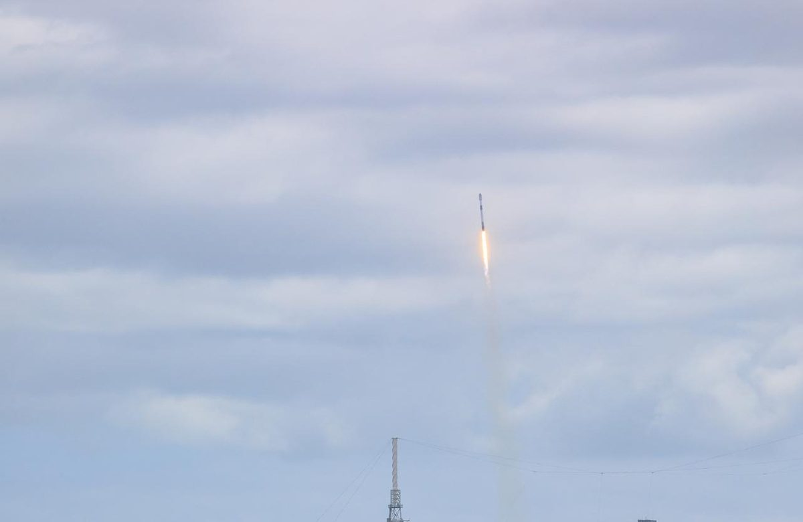

India's license fight, phones from space, and Crew-12 home
Musk made Starlink's stalled India launch the loudest story of the past day, while Bangladesh went live, KLM booked the constellation for ocean Wi-Fi, and Dragon brought four astronauts home.
India: oligarchs, Ambani, and the least-served
Quoting a long DogeDesigner thread that said 11,256 Indian villages still lacked 4G as of May and that only 4.26% of Indian internet subscriptions are wired, Musk posted the sharpest line of the day (seen more than 60 million times):
"Unfortunately, we are being blocked by certain oligarchs in order to maintain their monopolistic chokehold on the Indian people. You can guess who they are … This is a crime against the people of India!"
CNBC notes that Reliance chairman Mukesh Ambani's Jio and Sunil Mittal's Airtel together hold more than 80% of the Indian telecom market. India's government called discrimination claims "baseless," saying three satellite licensees (unnamed) still must meet security conditions; Starlink received a government license last year. On Thursday Musk escalated by name:
"Starlink is licensed in over 165 countries and has spent five years complying with every single law and requirement of the government of India, so why still no license? Is Ambani the real boss of India?"
Rahul Gandhi quoted that post: "Welcome to India, Elon. Wait till you discover the other guy." Musk answered: "Thank you, Rahul. This is indeed troubling." He kept the consumer case in the open:
"Starlink provides Internet connectivity to the least-served, enabling self-education and prosperity by giving people access to sell their products worldwide!"
"People who oppose @Starlink hurt only the least-served. The wealthy or those living in large cities already have good Internet, so they don't understand."
Earlier he had written that Starlink in India would enable "high-speed, affordable Internet connectivity for those who can't afford current prices or who don't have a connection at all," and that it "will be of great help to areas of India that have bad or no Internet and even no mobile coverage." On claims that militants used Starlink terminals inside India, he was flat: "Starlink beams are turned off over India, so the claim that they were used by anyone for any reason is absolutely false." He also told a user arguing for disaster resilience that "Starlink is often the only means of communication in natural disasters."
Coverage gaps, even in cities. Quoting a lawyer who said his village has had no mobile coverage "since Independence," Musk wrote that Starlink "can fill in the coverage gaps for those who most need it," noting that "no country has perfect coverage, including America." post
United Airlines Starlink. A passenger posted that free Starlink on a United transatlantic flight was "INCREDIBLE." Musk replied: "Hi Robin."
Starlink Mobile V2, Bangladesh, and airlines
After the Federal Communications Commission (FCC) approved up to 15,000 very-low-orbit direct-to-device satellites on October 6—flying about 326 to 335 kilometers up, targeting roughly 150 megabits per second per user, with half of the constellation due by October 7, 2032 and the full build by October 7, 2035, per Via Satellite—Musk wrote:
"Starlink Mobile (direct-to-cell) V2 satellites are incredible. This @SpaceX constellation will enable more than 100 times the bandwidth of our current V1 system!"
SpaceX president Gwynne Shotwell told investors the next-generation mobile system with EchoStar spectrum could be "100 times better" than today's ~650 dedicated mobile satellites. Starlink announced Starlink Mobile with Banglalink in Bangladesh—messaging and location sharing on compatible phones in cellular dead zones—and SpaceX commercial lead Stephanie Bednarek said the service adds a layer of connectivity for coastal communities and travelers. Musk: "Connectivity leads to prosperity" and "Starlink connecting Bangladesh!"
KLM chief executive officer Marjan Rintel said free Starlink Wi-Fi will roll out on intercontinental flights from mid-2027 for Flying Blue members in all cabins, with the full wide-body fleet targeted by mid-2028, per KLM's release. Musk amplified the announcement the same morning: "Starlink coming to KLM!"


Crew-12 splashdown and a lunar mass-driver aside
On Wednesday Musk marked "Dragon undocks from the Space Station" after SpaceX confirmed separation. On Thursday morning EDT, Crew-12's Dragon splashed down in the Pacific west of Los Angeles; Musk quoted SpaceX's confirmation: "Welcome home!" On power for AI in space, he posted the cryptic "Perspicacious path to a petawatt/year," then told Aaron Burnett: "The path to a petawatt/year is mass drivers on the Moon."